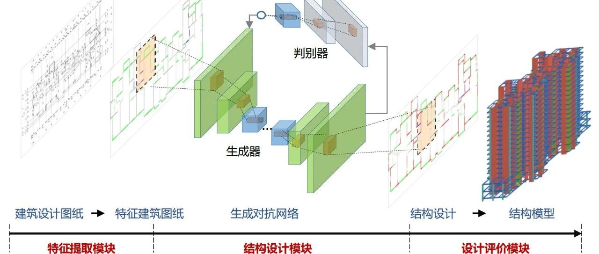

用人工智能进行结构方案设计| 发明：基于对抗生成网络的剪力墙结构布置方法
6分钟小视频介绍本方法
发明名称：基于对抗生成网络的剪力墙结构布置方法和装置
发明人：陆新征；廖文杰；郑哲
专利号：ZL 202010446468.9
1
专利概述
智能化结构设计是智能建造的重要内容。现阶段结构方案设计主要依赖设计人员的经验，缺乏智能化的设计方法。是否可能让人工智能通过大量学习既有设计资料，学会工程师的设计经验，进而可以实现让计算机来做结构方案设计？
本发明基于对抗生成网络模型，提出了一种基于对抗生成网络的剪力墙结构布置方法，如图1所示。采用该发明开展了系列案例设计，典型效果如图2和图3所示。该发明初步实现了让人工智能学会工程师设计经验，并提升设计效率的目标。

图1 基于对抗生成网络的剪力墙结构生成式设计方法

图2 智能化设计方法的典型案例应用效果

图3 智能化设计方法的多个案例应用效果
2
什么叫对抗生成网络
本方法的核心是“对抗生成网络”，它的核心是两个神经网络，一个神经网络叫“生成器”，可以根据一些输入信息生成一个新的图像（本专利中输入信息是建筑图纸（户型平面布置图），生成的是结构方案图纸）。另一个神经网络叫“判别器”，他负责判断生成器生成的图像是否符合要求。本研究把大量的建筑设计图纸和对应的结构图纸输入神经网络，一方面生成器不断的根据输入的建筑图纸去学习如何生成结构方案，另一方面判别器不断的把人工智能生成的结构方案和工程师设计的方案进行对比。
如果判别器发现结构方案是人工智能设计的，而不是工程师设计的，则生成器被判定“失败”，生成器去继续学习提升。如果判别器无法判别图纸是人工智能设计的还是工程师设计的，则判别器被判定“失败”，回去继续学习提升。判别器和生成器不断对抗提升，直至达到纳什均衡，这就叫“对抗生成网络”。（图4）

图4 对抗生成网络的基本原理
3
专利使用步骤
专利的主要使用步骤如图5所示，后续将进行详细的使用介绍。

图5 智能化生成式结构设计方法的使用步骤
3.1 步骤S101
获取待处理的建筑设计图纸
得到需要进行结构设计的剪力墙住宅建筑设计CAD图纸。
3.2 步骤S102
建筑设计图纸特征初步提取
提取建筑设计图纸中的关键元素，并对关键元素进行不同颜色填充处理，生成待输入图像特征。例如：提取建筑设计图纸中可布置剪力墙位置、室内门窗洞口和室外门洞三个关键元素；采用不同颜色对关键元素进行填充，其中，灰色代表布置剪力墙位置，绿色代表室内门窗洞口，蓝色代表室外门洞。典型设计图纸特征初步提取过程如图6所示。

图6 建筑设计图特征初步提取
3.3 步骤S102.5
对抗生成网络模型训练
采用步骤S102的特征提取方法，对已有的剪力墙建筑-结构设计的配套图纸进行特征提取，进而构建训练与测试数据集；随后基于该数据集对对抗生成网络模型进行训练（图7），直至设计效果稳定。采用本发明提出的性能评价方法，对该对抗生成网络模型进行评价，评估合格后可开展应用。

图7 对抗生成网络模型的预先训练
3.4 步骤S103
剪力墙结构设计图纸生成
基于步骤S102.5训练好的对抗生成网络模型，将步骤S102中得到的建筑特征图输入，便可直接得到结构设计图（耗时几分钟）。
4
典型案例应用
采用该方法，我们对多个建筑设计进行了案例的应用验证，部分典型结果如图8所示。可以看到，该方法完成的结构设计，与工程师设计的结果差异是非常小的。我们还邀请了部分专家对人工智能设计与工程师设计的结果进行判断和打分，结果表明，AI设计几乎可以以假乱真（图9）。

图8 部分典型案例应用结果

图9 基于盲测问卷的专家评价结果
5
总结
本专利采用对抗生成网络，开展了剪力墙结构的方案设计。通过对既有设计数据的收集、特征初步提取、构建数据集、训练对抗生成网络、以及开展相应的评估，最终完成了具备剪力墙结构方案设计能力的智能化生成式结构设计方法。基于该方法，可以实现设计经验传承、设计效率提升、建筑-结构协作优化。我们相信，该发明只是一个起点。未来，我们将会更加深入的研究，致力于建筑结构智能化设计方法的发展。
6
本课题组相关专利
[1] 陆新征, 廖文杰, 徐永嘉, 基于卷积神经网络振动识别的线性二次型控制改进方法，发明专利，专利号：ZL 202010169860.3
[2] 陆新征，徐永嘉，程庆乐，基于循环神经网络的地震破坏力预测装置及方法，发明专利，专利号：ZL 201911154874.1
[3] 陆新征，许镇，曾翔，杨哲飚，一种城市建筑地震次生火灾模拟方法，发明专利，授权号：ZL 201810255576.0
[4] 陆新征，曾翔，许镇，田源，一种基于震后航拍影像的近实时震损评估方法，发明专利，授权号：ZL 2018 1 0119671.8
[5] 陆新征，许镇，城市建筑群地震反应非线性历程分析方法及装置，发明专利，授权号：ZL 2018 1 0112837.3
联络邮箱:

廖文杰
---End--
相关研究
专著
人工智能与机器学习
城市灾害模拟与韧性城市
高性能结构与防倒塌
新论文：抗震&防连续倒塌：一种新型构造措施
长按识别二维码，关注我们的科研动态